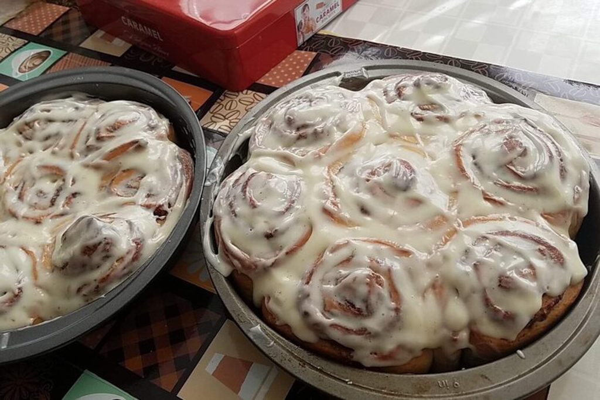
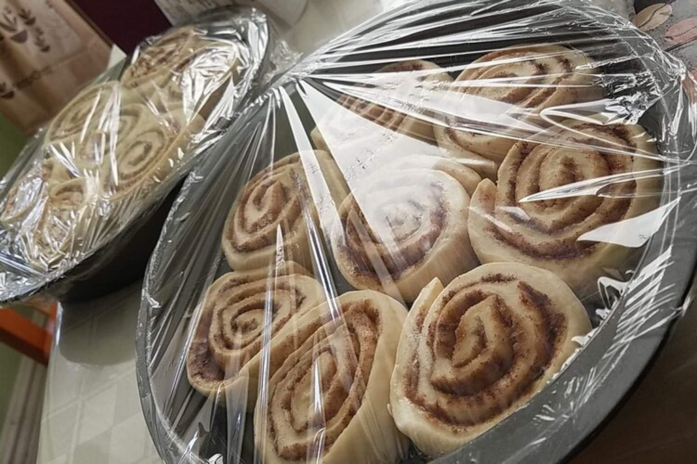
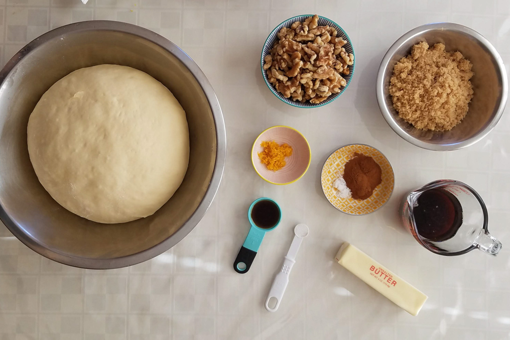
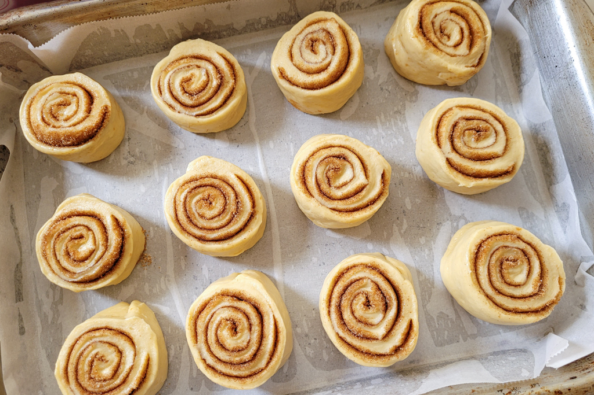
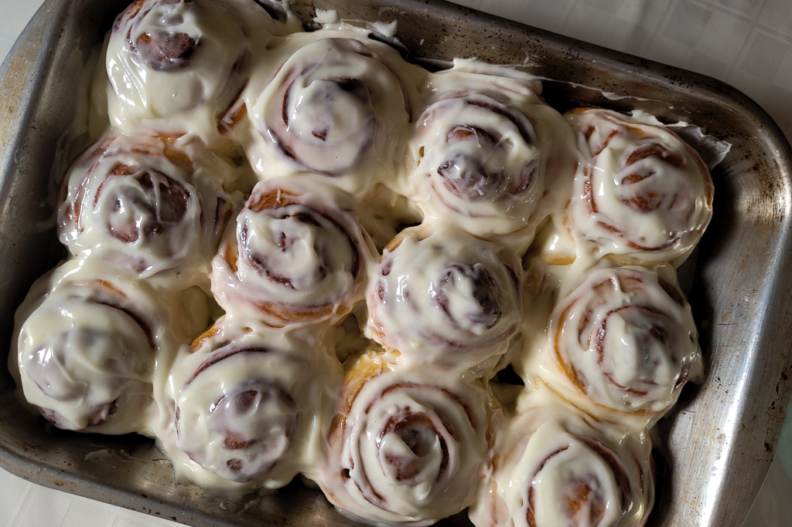

The Best Cinnamon Roll Recipe
Jan 24 - Written by Emily
Who doesn’t love a warm pillowy soft sticky bun or cinnamon roll? It’s like a sweet fluffy cloud that melts in your mouth with every bite!
Now there are many recipes out there for cinnamon rolls and sticky buns that are great but I’m here to share with you my all time favorite recipe as well as my experience trying out various ones.
Homemade Cinnamon Rolls - Tasty
Now this recipe is fairly easy to make and doesn’t take a lot of kneading so its very doable without a stand mixer. It’s the perfect option for someone who is just getting started with making cinnamon rolls or maybe you just can’t be bothered to knead the dough for a long period of time. Either way, these buns were soft and full of cinnamon sugar deliciousness but I do have to say, my review of this recipe isn’t fully accurate because when I made this recipe, I accidentally left out a crucial ingredient, the baking powder. Since I left this ingredient out, the buns were a bit dense and not as soft and fluffy as they could’ve been but the taste was still there. They made just the right number of buns and were your standard cinnamon roll but other than that there wasn’t anything too special about these rolls in my opinion.
My recommendation is that if you want something fairly easy, quic, and tasty, this is the recipe for you. But, if you’re down for the extra bit of time and effort, I’d suggest going with a different recipe for a far better cinnamon roll.
Cinnamon Date Sticky Buns - Bon Appetit
I was very excited to try this recipe as the photos looked incredible and the dough was an overnight dough so I didn’t have to spend my day anxiously waiting for dough to rise. However, something I found kind of annoying was the process of rolling and folding out the dough rather than kneading it the normal way but considering how we don’t have to spend a lot of time kneading the dough, it’s worth it. Now the dough rises in the fridge overnight so that’s a plus for this recipe because it allows you to have freshly baked cinnamon rolls in the morning by only having to do half the work!
So, this recipe is a cinnamon date sticky bun but since I didn’t have access to dates at the time, I just made them into normal cinnamon rolls. Now, since I was modifying the filling for this recipe without any other reference except prior experience in making cinnamon rolls, all I can say is I didn’t need that much butter. To make a filling resembling the consistency of the cinnamon date sticky buns, I added some butter to the cinnamon sugar mixture to make a paste but didn’t have a reference point as to how much butter I really needed. In some ways you can’t go wrong with so much butter but in this case, it just felt like less would’ve made for a better bun.
Now, the frosting for this recipe is much thinner than others and is a bit more of a glaze than frosting which I like and don’t like at the same time. The benefits of having a thinner frosting is that it’s much easier to spread over the buns and have all the sweet liquid goodness seep into the buns, but I don’t like the way the glaze hardens over the buns. This icing was good but it wasn’t quite my favorite as it was mainly just powdered sugar, water, and milk. I prefer a good cream cheese frosting to balance out all the sweetness of the icing and it compliments the flavors of the bun well.
Overall, this recipe made for a solid cinnamon roll; however, I believe the buns could’ve been softer and fluffier. The filling was good but like I said before, less butter may have helped make for a better bun. If you’re looking for a good recipe that in some ways takes less time out of your day, try this one out!
Maple Walnut Buns - Claire Saffitz
This was the first recipe I tried out from her cookbook Dessert Person as the buns looked almost too good to eat and I’ve never had anything but a cinnamon roll so I was excited to try something a little different. Now before I get into the details of this experience, I do have to say I did switch out the cardamom for cinnamon in this recipe as I didn’t have any cardamom so taste wise, it’s not the most true opinion on her recipe.
This recipe requires many more steps than the other cinnamon roll recipes I’ve mentioned but like the Bon Appetit one, the dough can be made ahead of time and be left in the fridge to rise. So, with the dough all made and all the ingredients prepped, it was a long but smooth process between toasting the walnuts and making the maple topping. But, all these steps are worth it to see the buns flip out of the pan and the gooey maple topping drip over the buns. Now, that is what I expected to have happened, the topping to release cleanly from the pan and be liquid enough to ooze down the sides. But, when I flipped the buns out of the pan, most of my topping was stuck and I had to scrape it back onto the buns and since it was also a bit thicker it didn’t go back onto the buns smoothly making them not the most aesthetically pleasing buns I was hoping for. All this aside, the topping was still delicious but the execution and presentation could have been better.

Now for the taste, I feel there could have been more cinnamon flavor as the orange zest was a bit overpowering. The bun itself was soft and fluffy and the walnut topping provided extra texture and flavor but this whole combination of flavors was a bit confusing for my mouth. My brother thought the buns were a little bit dry and I would have to say I kind of agreed with him, but that is more a reflection of my baking skills than the recipe itself.
This recipe makes some really eye catching buns but definitely requires a little more work and patience to get them right. This recipe is worth all the effort; however, it’s not my ideal kind of bun so I probably wouldn’t be making these exact buns again but I’d use her dough recipe to make regular cinnamon rolls as it was a fairly easy dough to make.
Cinnamon Rolls - Binging with Babish
Now this last cinnamon roll recipe is my all time favorite and is the one I’ve made several times already. They turn out slightly different each time but it is the Cinnamon Roll Recipe by Binging with Babish.
This recipe requires a lot of patience as there is a lot of downtime waiting for the dough to rise but trust me, it’s worth the wait! The first time I made this recipe, I kneaded the dough by hand so it’s also doable without a stand mixer if you’re up for a solid arm workout.
There isn’t much I’d say about the process of making these rolls as it's very straight forward, you make your dough, let it rise, roll it out, let it rise again, and then bake. That’s how they all go but the rising times is the one thing I’d say tests your patience because this recipe requires the dough to rise for 1-2 hours each time and all you want to do is eat the buns.
The one issue I have with this recipe is just spacing them out appropriately on a pan and slicing them evenly but that is more due to a lack of the appropriate materials. I would have to say getting some clean even slices is a challenge in general but as long as they are all close to even, then you’re all good. We ain’t looking for perfectly even buns, just remember to not overcrowd your pan and give the buns space to rise to ensure you get a fluffy roll.
This recipe makes for the perfect soft, pillowy rolls you’d expect with just the right amount of cinnamon sugar in each bite. Even if you mess up the recipe slightly or modify it with a different flour or milk because you don’t have access to them, it still makes for a solid roll. I do have to say that going with the right ingredients will give you a better bun but sometimes, you just gotta settle for what you have. The cream cheese frosting is also really good as it’s not overly sweet so it compliments the buns well. When making cinnamon rolls, you can never skip out on the frosting, that is crucial!
Now these are only a couple recipes for cinnamon rolls and there are many more I’ve been thinking about trying out to find the ultimate recipe or even developing my own from all this recipe testing. However, for now, I will be sticking with my go to recipe as it has yet to fail me in both looks and taste.